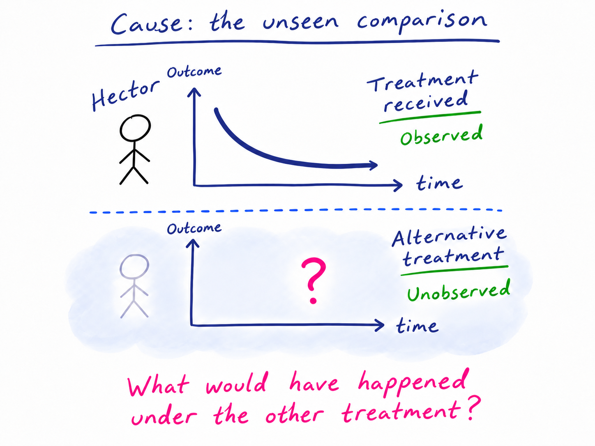
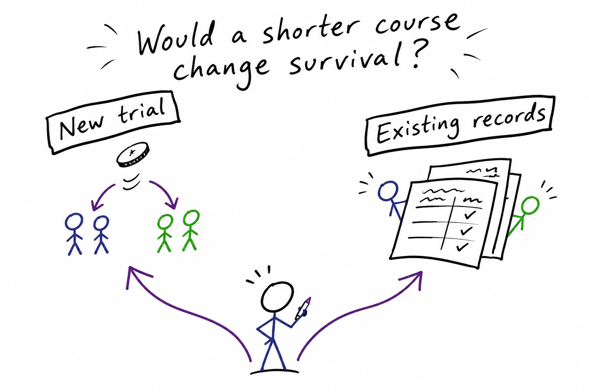
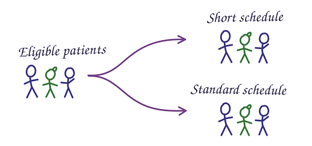
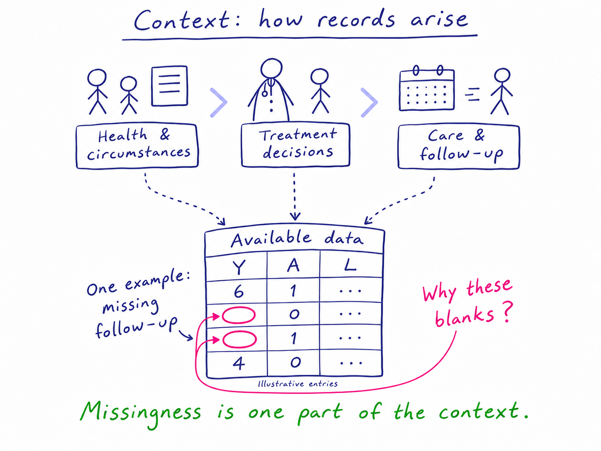
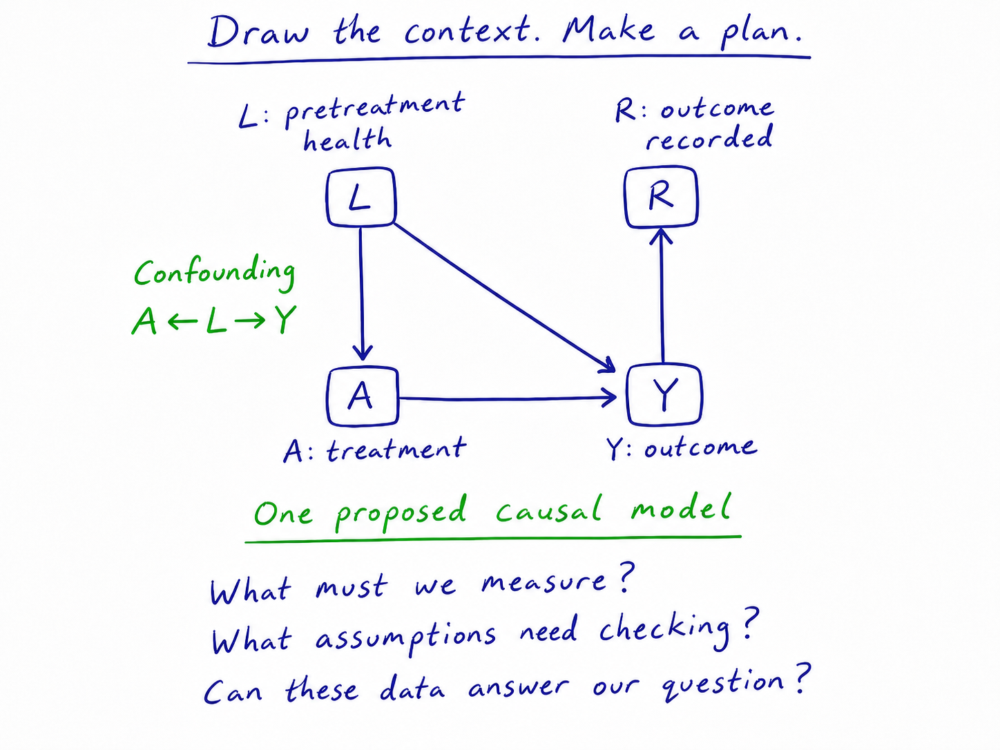
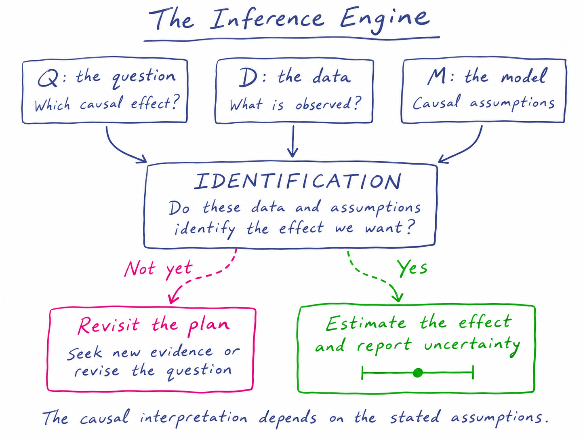
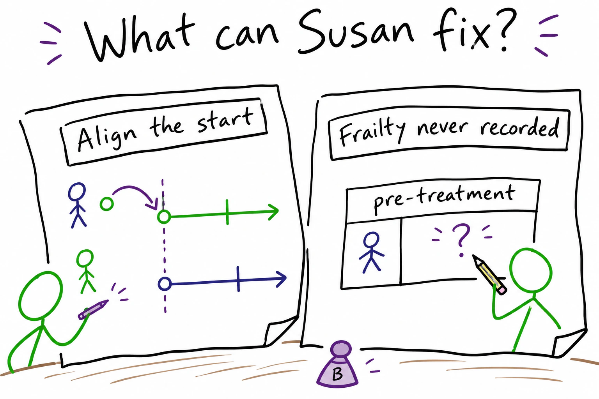

Susan’s study · A fictional example
Would a shorter course change survival?
A shorter course of radiotherapy means fewer trips. Susan starts with the fractionation trials already on the shelf. Which of her older or frailer patients did those trials represent well, and did they measure the outcome those patients ask about?
For patients who could reasonably receive either schedule, she wants to compare average months alive over five years. In her records, pretreatment health influenced both the schedule chosen and survival. Can she make a fair comparison from those records, or is there a question worth taking to a new randomized trial?
Description: How did the two groups fare?
Prediction: Who is likely to survive?
Cause and effect: What would changing the treatment do?

More about these three questions

Before the roadmap · Recognize the question
Three questions that look alike
The same registry can answer three different kinds of question: description, prediction, and cause and effect. Each needs different tools.8
A causal effect compares two outcomes for the same patients: one under hypofractionation and one under conventional fractionation. Each patient shows us only one of them. No cohort size and no better learner can fill in the other, so ordinary prediction accuracy cannot confirm a causal effect. A causal analysis is built on a design and on stated assumptions, and then challenged from several directions.
The three kinds of question, side by side
| Kind of question | Example on hypofractionation | Typical tools | How you check the answer |
|---|---|---|---|
| Description | How did the share of hypofractionated courses change between 2010 and 2022, by age group? | Counts, proportions, Kaplan-Meier curves by group | Check the counts against the source |
| Prediction | Which patients starting radiotherapy will die within 3 years? | Cox regression, random survival forest, XGBoost, neural networks | Held-out data: concordance index (C-index), calibration. The outcome is eventually observed for patients followed long enough, so the prediction can be scored, with censoring handled. |
| Cause and effect | Would patients aged 75 or older live longer, on average, if they all received hypofractionation instead of conventional fractionation? | Target trial emulation plus a causal estimator (this page) | The outcome under the schedule a patient did not receive is never observed, so prediction accuracy cannot confirm the effect. Causal checks exist (the sensitivity step), but each rests on assumptions. |
Why isn’t prediction enough?
A prediction model can learn who tends to do better in the world we observe. To ask what would happen if we changed treatment, we need to understand the context that produced those observations.8
Think of three C’s: cause, context, and confounding. Asking about cause makes us examine context: why patients received different treatments, what clinicians knew when they chose them, and how outcomes were recorded. When the circumstances influencing treatment also affect the outcome, they can confound our comparison.
The causal roadmap brings this context into the study design. It helps Susan state her assumptions, plan the comparison, and assess whether the available evidence supports it.
Where coefficients and SHAP fit
Prediction can use contextual information. Predictive accuracy alone does not establish that the causal roles of those variables have been handled appropriately. A coefficient or SHAP value describes an aspect of a fitted model; it is not automatically the effect of intervening on treatment. The first simulation shows how including a consequence of treatment can improve prediction while distorting the estimated total effect.
If the assumptions are uncertain, why think causally at all?
If we want to choose a treatment, we are already asking what it would cause. Making the assumptions explicit lets us examine the context behind that answer, including confounding, and identify what evidence would strengthen or challenge it.1
An uncertain assumption is not a fact to hide inside a model. State why it is plausible, what remains unknown, and how the conclusion changes under credible alternatives. A confidence interval describes sampling uncertainty under the analysis assumptions; it does not automatically include bias from an unmeasured common cause.
Context also includes who enters the records, how treatment is defined, what gets measured, and whose follow-up is lost. Confounding is one important part of that account. A useful conclusion can be a qualified effect estimate, a range under stated scenarios, or a clear reason to collect different evidence.
Could more data or AI settle the uncertainty?
More records can improve precision, and AI can help organize scientific knowledge and evidence. But different causal explanations can fit the same observational data while implying different intervention effects. Ask which design, evidence and assumptions support the answer. A DAG makes some of those assumptions inspectable; it does not prove them.9
Could we report only an association, or search for a benefiting subgroup?
An association may answer a descriptive or predictive question. If the result is used to choose treatment, the causal question remains. Likewise, finding a subgroup that appears to benefit requires a causal argument and a plan for checking the discovery. See what a subgroup estimate establishes.
Not only for registry data
Causal machine learning is often presented as a way to analyze registry data, and most of this page uses registry data. The same methods also work on RCT data, with different assumptions: randomization settles confounding of the assigned treatment, and the methods then add precision, show who benefits, and carry trial results to other patients. The trial-data extension explains what they add there.
Try it: which kind of question is this?
The eight-step roadmap
- Define the question
- Specify the causal model
- Describe the data
- Assess identification
- Define the statistical target
- Estimate with uncertainty
- Challenge the result
- Interpret and decide
1 · Define the question
Who and what are we comparing?
Define the change you want to understand: which treatments, for whom, on what outcome, and over what time. A precise causal question guides the study design and the evidence you need.
See Susan’s target-trial plan and effect measures

Write the question precisely: name the population, the strategies compared, the outcome, the time horizon and the effect scale.4,10 Susan’s question is about changing the treatment, not simply predicting which patients live longer.
What do the fractionation trials already tell Susan?
For localized prostate cancer, CHHiP found 60 Gy in 20 fractions noninferior to 74 Gy in 37 fractions for its primary endpoint of biochemical or clinical failure.11 Susan asks about months alive over five years, counting deaths from any cause. She checks whether the tumor site, schedules, patients, endpoint and follow-up match her question. If the trials already settle it for patients like hers, she has a reason to stop. If an important group was sparsely represented, the records may help her study that group.
Within step 1 · Plan the target trial
Write the trial you would run, then imitate it
Target trial emulation means writing the protocol of the randomized trial you would want to run to answer your question, and then making the observational analysis follow that protocol as closely as the data allow.5 Aligning eligibility, treatment assignment and the start of follow-up helps prevent avoidable design biases. Remaining data gaps and assumptions still need to be examined.
The protocol states the comparison Susan wants to make. The remaining steps examine whether her records can support it: what must be assumed, how to estimate the effect, how to challenge the result and what conclusions it supports. Randomized trials also need explicit assumptions, an analysis plan and a justified interpretation.50
Two ways to study the question
Run a randomized study
Assign strategies at random to address confounding of treatment assignment. Treatment definitions, adherence, follow-up and applicability still need attention.
Use observational records
Reconstruct the comparison from care that already happened. Learn how treatment was chosen and assess whether the data and assumptions support the intended effect.
The protocol, element by element
| Protocol element | The target trial | The emulation in registry or EHR data |
|---|---|---|
| Eligibility | Adults with a newly diagnosed tumor of the chosen site, curative intent, no prior radiotherapy to the region, both schedules acceptable | The same criteria from diagnosis codes and treatment fields. Exclude palliative courses and schedules that fit neither strategy. |
| Strategies | Conventional versus moderate hypofractionation as prescribed. Specify total dose, dose per fraction, fraction count and any concurrent therapy for the chosen tumor site. | Classify by the prescribed schedule at the start, not by what was eventually delivered |
| Assignment | Random | Not random. Assume the groups are comparable after adjusting for the measured baseline factors (the identification step). |
| Time zero | Randomization, immediately before the first fraction | The first day of radiotherapy, for both groups |
| Follow-up | From time zero to death, loss to follow-up, or 5 years | The same, with censoring at last contact, and a plan for censoring (the identification step) |
| Outcome and effect scale | Death from any cause. Compare average months alive through five years. | Use vital status and dates of death or last contact to estimate the same difference in restricted mean survival time (RMST). |
| Causal contrast | Effect of being assigned to a schedule (intention to treat), and of following it (per protocol) | Usually the analog of intention to treat. A per-protocol analog needs data on interruptions and switching. |
| Analysis plan | Compare survival between randomized arms | Adjusted estimator chosen in the estimation step, prespecified, with the checks of the sensitivity step |
Trap: starting the clock late, or grouping by the course completed
A conventional course takes several weeks longer than a hypofractionated one. Two different mistakes can follow, and both come from misaligning eligibility, assignment and the start of follow-up.12
- Starting follow-up at the end of radiotherapy. Deaths during treatment are lost, so each group is restricted to patients who survived to a later start, and that start is later for the conventional group. This is a selection bias: it changes who is being compared. Its direction is not fixed. It depends on how the risk of death changes over those weeks, so it can favor either schedule.
- Classifying patients by the course they completed. To be counted as having completed the longer course, a patient must survive until it ends. That stretch of guaranteed survival is immortal time, and it makes completers look better than they are.
Starting the clock at the first fraction and classifying by the prescription avoids both. A landmark analysis that starts later on purpose is not wrong in itself, but it answers a different question about a different population, the patients who survived to the landmark.
Trap: classifying by the dose received
A patient who becomes too sick to continue receives fewer fractions than prescribed. Classifying by delivered fractions moves the sickest patients into whichever group looks like a shorter course. The prescribed schedule is the treatment strategy. What happened during the course is an outcome of that strategy.
Within step 1 · Name the causal quantity
Decide the exact number you want
Susan subtracts average months alive under the conventional schedule from average months alive under the shorter schedule. A positive difference favors the shorter course on this outcome.
Here, restricted mean survival time (RMST) means the average time lived within the chosen follow-up period. Susan specifies the causal quantity now; step 5 asks how it can be expressed using the observed data.
- For whom?
- The patients in the target population
- Comparing what?
- Two specified treatment strategies
- On which outcome?
- A quantity that answers the clinical question
- Over how long?
- A follow-up horizon chosen in advance
What RMST is, and why it suits clinical decisions
RMST is the area under the survival curve up to 5 years, in other words the average number of months lived within those 5 years.33 A difference of 2 months is something a patient and a clinician can weigh against convenience and toxicity.
For whom: the whole population, the treated, or subgroups?
- Average treatment effect (ATE): everyone eligible. Answers “what if we changed practice for this whole population?”.
- Average treatment effect in the treated (ATT): the patients who actually received hypofractionation. Answers “did it help the patients we gave it to?”.
- Conditional average treatment effect (CATE): patients with given characteristics, such as age 75 or older. Answers “who benefits more?”, the question behind tailoring treatment to subgroups and individual patients. It is harder to estimate reliably and needs its own checks.
Why not a hazard ratio?
The hazard ratio (HR) from a Cox model compares death rates among patients still alive at each moment. If the treatment helps early, the patients still alive later in the two groups differ in more than their treatment, so a hazard ratio has selection built into it. It also changes over time whenever hazards are not proportional, and a single HR then averages over an effect that is moving.34 A Cox model remains a good description tool and a reasonable outcome model inside some causal estimators. However, the number to report for a causal question is usually a difference in survival probability or RMST at stated times.
How an effect can rise, peak and even reverse over follow-up, why one hazard ratio cannot show that, and how a causal survival forest and CAST estimate the whole trajectory are worked through with simulated data on the CAST walkthrough. The methods and diagnostics page lets you change the strength of confounding and watch each method respond.

2 · Specify the causal model
What could explain the difference?
A causal model states how you think the data were generated. It makes context explicit, including what influenced treatment choice and what else could affect the outcome. A causal diagram helps reveal possible confounding before you decide what to adjust for.

Explore the causal diagram and adjustment choices
A directed acyclic graph (DAG) is a picture of causal assumptions: arrows point from proposed causes to their effects, with no directed loop back to the same variable. It helps us reason about which comparisons the data could support.16
Why draw the context?
A diagram lets collaborators inspect the same account of treatment choice, outcomes and other influences. It can reveal a common cause that needs attention, a missing measurement, or a variable that should not be adjusted for. The assumptions guide the analysis; a drawing alone does not validate them.
Where do the arrows come from?
Use knowledge of clinical practice, biological mechanisms, timing and prior research. Ask clinicians and patients what shaped treatment choices. Include plausible common causes even if the dataset did not measure them. An association in the records does not by itself establish an arrow. When a relationship is uncertain, compare plausible diagrams and explain what changes in the analysis.17
How does the drawing connect to the mathematics?
In the DAG, pretreatment health (L) is a proposed common cause of treatment (A) and outcome (Y). The path A ← L → Y can mix the influence of health into the treatment comparison. If L captures the relevant common causes, adjustment compares treatment groups within health strata and then averages both over the same target population.
Here E[Ya] means the average outcome if everyone received treatment a. First set aside the recording problem: in a simpler setting with discrete L and fully observed outcomes, standardization writes this as:
E[Ya] = Σl E[Y | A = a, L = l] P(L = l)
This equality requires consistency, exchangeability given L, and positivity. This formula does not by itself solve the Y → R recording problem in the sketch. For Susan’s time-to-event analysis, the identification step also examines censoring. The statistical target uses both survival curves.1
Start with paper and pencil, or use DAGitty to draw a diagram and explore its implied adjustment sets.32 The interactive adjustment exercise lets you explore how paths change when you condition on different variables.
Adjust for common causes measured before treatment. Do not adjust for anything the treatment itself affects when estimating the total effect of the schedule chosen at the start. Name what is missing.
The causal diagram for the running example
The three rules, explained
- Adjust for common causes measured before treatment. Age, comorbidity, stage, facility and calendar year can each push toward one schedule and also change survival. If uptake of hypofractionation changed over the years while other care also improved, calendar year is a confounder. These factors do drive the choice in practice: in a US registry study of breast cancer, older patients were much more likely to receive hypofractionation, and so were patients living 50 miles or more from the treating facility.13
- Do not adjust for anything the treatment itself affects, in a baseline analysis of the total effect. Treatment interruptions, acute toxicity, early tumor response and later systemic therapy lie on the path from schedule to survival. Entering them as ordinary covariates removes part of the effect and can add new bias.14 A prediction workflow puts them in because they raise accuracy. A causal workflow for the total effect leaves them out for exactly that reason. Methods for per-protocol effects, treatment rules and censoring (the treatment-policy and trial-data extensions) do use post-treatment history, on purpose and with g-methods. That is a different operation from adding it to a regression.
- Name what is missing. If frailer patients with poor performance status are steered toward the shorter course, and performance status is not recorded, the comparison is confounded by indication. No estimator fixes this. The sensitivity step asks how strong it would have to be to change the conclusion.
Simulation 1: better prediction, wrong effect
A toy simulated cohort where frailty pushes patients toward hypofractionation and also lowers the outcome. Hypofractionation changes a variable measured after treatment starts, such as early response, and that variable affects the outcome. Two least-squares models are fitted to the same patients. The causal model adjusts for frailty only. The predictive model also adds the post-treatment variable, because it improves accuracy on held-out patients.
Held-out R² (higher predicts better)
Estimated effect, outcome units (bar = truth, whiskers = 95% interval)
How this cohort is simulated
This is a toy model with a continuous outcome on a month-like scale and no censoring, not a survival-time simulation. Some simulated outcomes are even negative, which real survival times cannot be. Frailty is a standard normal score. The probability of hypofractionation rises with frailty. The post-treatment variable equals 1 × schedule − 0.5 × frailty plus noise. The outcome equals 48 − 12 × frailty + a direct effect of the schedule + 6 × the post-treatment variable, plus noise. The total effect of hypofractionation is the direct effect plus 6, and three scenarios set that total to 0, +4 and −4 units. Half the patients are used for fitting and half are held out. The richer model is a retrospective prediction: the post-treatment variable would not be available when the schedule is chosen. The design is taken from the author's October 2026 talk at the University of Hawaiʻi Cancer Center and recoded to run in your browser.
3 · Describe the data
What do the records contain?
Check whether the records capture the context your causal model requires, at the right times. Look for missing causes, unreliable measurements, gaps in follow-up, and patients with no treatment comparison.
Inspect the data checklist
Susan now checks whether the records contain what her question and causal model require. A large dataset can still be missing a variable that matters.
Before any modeling, list what the question needs and check whether the data have it:
- The treatment, defined at the start. The prescribed dose per fraction, number of fractions and total dose, not only the total.
- Time zero and follow-up. The date of the first fraction, the date of death or last contact, and why follow-up ended.
- Everything that drove the choice of schedule and also affects survival. Age, comorbidity, stage, tumor size, performance status, distance to the treating center, facility, insurance, calendar year.
- The outcome. Death from any cause is usually recorded well. Recurrence, toxicity and cause of death often are not.
National registries such as the National Cancer Database (NCDB) and Surveillance, Epidemiology, and End Results (SEER) are large but may lack performance status, toxicity and recurrence. An institutional electronic health record (EHR) may have them but covers fewer patients. Write down the gaps now. They become the questions to examine in the sensitivity step.
4 · Assess identification
Can the data support the causal question?
Identification asks whether the observed data could answer the causal question under stated assumptions, even with unlimited patients. Examine the context behind each assumption before choosing an estimator.
- Exchangeability: after adjusting for measured baseline factors, treatment choice is unrelated to the survival patients would have under either schedule.
- Positivity: both treatment strategies are possible for the patients in the question.
- Consistency: the recorded treatment corresponds to the specified strategy being compared.
- Censoring: given the measured history, loss to follow-up is unrelated to survival, with follow-up support through the chosen horizon.

Examine the assumptions and a missing-confounder simulation

Identification asks whether the estimand could be computed from the observed data if you had unlimited patients. The three treatment assumptions are exchangeability, positivity and consistency.1 For a survival outcome, it also rests on assumptions about censoring.35
Identification decides whether the data can answer the question. Estimation decides how well you compute the answer. Better models, including neural networks, help the second layer. They cannot fix a failure of the first.
The three treatment assumptions, in plain clinical terms
| Assumption | Plain meaning in the example | How to probe it |
|---|---|---|
| Exchangeability (no unmeasured confounding) | After adjusting for the measured baseline factors, the schedule a patient got is unrelated to how long they would have lived under either schedule | The DAG. Balance checks. Sensitivity analysis for what is missing. |
| Positivity (overlap) | Every kind of patient could plausibly have received either schedule. If a policy gives every patient over 85 hypofractionation, the data say nothing about conventional fractionation at that age. An empty cell in a small sample is not proof of such a rule: check why it is empty. | Plot the estimated probability of hypofractionation in each group. Restrict the population where overlap fails, and say that the restricted population is now the one your answer applies to. |
| Consistency (a well-defined treatment) | “Hypofractionation” means a specific schedule, or a family whose versions are named and chosen by a stated rule, not anything shorter than usual | Define the strategies by total dose, dose per fraction and number of fractions. Similar estimates across versions are reassuring but do not prove the versions are interchangeable. |
Censoring and follow-up: the assumptions survival adds
Patients who are lost to follow-up or reach the data cutoff are censored. Two more conditions are then needed:35
- Ignorable censoring. Given the measured variables, whether a patient is censored is unrelated to how long they would have survived. Administrative censoring at a fixed data cutoff usually satisfies this. Loss to follow-up in sicker or healthier patients may not.
- Follow-up through the horizon. Every kind of patient needs a real chance of still being followed at 5 years. A group that is all censored by year 3 cannot support a 5-year estimate, however good the model.
Randomization does not fix informative loss to follow-up: it balances the assigned treatment, not who drops out later. Many estimators exist in a complete-outcome form and a survival form. The plan must name a version that handles censoring, such as censoring weights or a survival-specific estimator.
Simulation 2: when the confounder is not in the data
A toy simulation with a continuous outcome on a month-like scale and no censoring. Performance status is worse in some patients. Those patients are more likely to receive hypofractionation and have lower outcomes. Three other covariates are recorded. The true effect of hypofractionation is unit. Two least-squares models use the same simulated patients and differ only in whether performance status is among the covariates. Move the slider to change how strongly performance status drives both the schedule and the outcome.
Estimated effect of hypofractionation, outcome units (95% interval)
5 · Define the statistical target
What quantity would we estimate?
Translate the causal question into a quantity expressed using the observed data. The identification assumptions explain when this statistical target corresponds to the treatment effect you want.
More on causal and statistical targets
The causal estimand describes the treatment comparison Susan wants. A statistical estimand expresses the quantity to estimate from the observed data. The identification argument connects the two.4,10
The target is the area between the two standardized survival curves through month 60. The estimator is the rule Susan will use to calculate that area from the records.
If the assumptions cannot support the original causal comparison, return to the question or data. A more sophisticated estimator does not supply the missing identification argument.
6 · Estimate with uncertainty
Which method fits that target?
Choose a method that estimates the statistical target and reports its uncertainty. Flexible prediction can help inside a causal analysis, while the study design and assumptions determine what the result means.
Different learners, the same estimate?
Use six example patients to trace g-computation and the S-, T- and X-learners. Then compare how TMLE and double machine learning (DML) estimate the five-year mortality difference between schedules across all 5,000 eligible patients.
Compare estimators and worked simulations
Once the estimand is identified, several estimators can compute it. Most need two prediction tasks, called nuisance models: the outcome given baseline factors, and the probability of receiving each schedule given baseline factors (the propensity score).2 This is where random forests, XGBoost and neural networks go. They stop being the analysis and become components of it.
The estimator menu
For example, targeted maximum likelihood estimation (TMLE) is often paired with super learning, which combines machine-learning algorithms so that the estimate depends less on any one modeling assumption being right.10
| Estimator | What it models | What must be right | What it gives you |
|---|---|---|---|
| Cox model with a treatment term (for contrast) | Hazard given treatment and covariates | Proportional hazards, the right covariates, a correct form | One conditional hazard ratio |
| Outcome regression (g-computation) | Outcome given treatment and covariates | The outcome model | Average outcomes under each strategy, for example adjusted survival curves |
| Inverse probability of treatment weighting (IPTW) | Propensity score | The propensity model, and enough overlap | Weighted outcomes or survival curves under each strategy |
| Augmented IPTW (AIPW) | Both | For consistency, either model (doubly robust) | Average effect. Flexible machine learning can be used for both models when combined with cross-fitting.6 |
| TMLE | Both, then a targeting step | For consistency, either model (doubly robust) | Average effect. Often paired with super learning.10 |
| Double machine learning (DML) | Outcome and treatment, using cross-fitted predictions | The estimating equation must match the question. Cross-fitted AIPW has the same double-robust consistency property as AIPW above. Valid intervals also require control of prediction errors. | For an all-patient average, use the AIPW estimating equation. A partially linear model estimates one residual slope. With binary treatment and varying conditional mean effects, the slope gives more weight to groups in which both treatments are common.6 |
| LMTP estimators | Both, at each time point | TMLE: one of a set of ordered combinations of correct models. Sequentially doubly robust (SDR): at each time point, either the outcome model or the treatment model.36 | Effects of modified and rule-based policies, including treatments that change over time |
| Causal forest and causal survival forest (CSF) | Treatment effect as a function of covariates, with doubly robust corrections | Overlap, enough data for subgroups, and for CSF ignorable censoring with follow-up through the horizon | Who benefits more (CATE) and the average effect. CSF handles censored outcomes, targeting RMST or survival probability.7,35 |
| CAST | CSF estimates at several horizons, joined by a trajectory model | Everything CSF needs, plus the trajectory model and its assumptions about uncertainty across horizons | A smooth effect trajectory over follow-up.37 Peaks and crossings are model-based summaries. See the CAST walkthrough. |
What “doubly robust” does and does not promise
“Doubly robust” means the estimate stays consistent if either the outcome model or the propensity model is correct, given the identification assumptions of the identification step.1 Its larger practical benefit is that flexible machine learning can be used for both. The confidence interval keeps its meaning only under further conditions: overlap, nuisance models learned well enough, an appropriate score for the estimand, and cross-fitting or similar safeguards.6 A poorly fitted learner does not earn a valid interval. Running two or three estimators that depend on different models is also one of the checks in the sensitivity step.
Two safeguards inside the estimator: cross-fitting and honest trees
Double machine learning combines an estimating equation chosen for the effect of interest with cross-fitting. A Neyman-orthogonal equation is insensitive, to first order, to small errors in the nuisance models. Cross-fitting uses other patients to fit the models that predict for each held-out fold. Then combine the held-out contributions across the cohort. For an ATE using AIPW, average the corrected risk differences. The partially linear calculation in Simulation 3 fits one slope using the pooled residuals.6
Causal forests use a related idea called honesty. In the usual form, each tree is grown on one subsample, and the estimates in its leaves come from a different subsample,7 so the same outcomes are not used both to choose the splits and to estimate the effects inside them.
Simulation 3: every confounder measured, but the model is tuned for prediction
Here nothing is missing. A toy simulated cohort of patients, with a continuous outcome and no censoring, has recorded covariates. A few strongly affect the outcome. Many affect the choice of schedule strongly and the outcome only weakly. The rest affect neither. The true effect is units, the same for every patient. A lasso, a regression with a penalty that shrinks coefficients, is fitted at penalty strengths, always keeping the schedule term unpenalized. Move the slider to change the penalty.
Held-out R²
Estimated effect, outcome units
Why this happens
The covariates that mostly predict who receives hypofractionation add little to predicting the outcome, so the penalty shrinks them first. Shrinking them hands their share of the confounding to the schedule term. Prediction accuracy barely changes, so a model chosen for accuracy cannot see the problem. This partially linear DML example chooses the two lasso penalties by cross-validation across the full cohort. In each rotation it fits the outcome and schedule models on four folds and computes both residuals on the fifth. It pools those residuals to fit one slope. The estimating equation reduces first-order sensitivity to small errors in the predictions. Because the simulated effect is the same for every patient, this simple residual-on-residual version targets it. With effects that vary, it would target a weighted average instead. Unpenalized least squares would also work here, because the model is linear and the sample is large. The lesson is not to read an effect off a model tuned for prediction.
Try it: which estimator should I start with?
7 · Challenge the result
What could change the conclusion?
Challenge the assumptions most vulnerable in this setting. Check the analysis, examine treatment overlap, and ask how plausible unmeasured causes or other biases could change the conclusion.
Explore diagnostics, sensitivity and simulation checks
A prediction is validated on held-out outcomes. A causal estimate cannot be validated that way, so confidence comes from how much it withstands: overlap, agreement across estimators, planted-effect and negative-control checks, and a bias analysis for what was not measured.
A rehearsal with an answer key
Can the pipeline recover an effect we put there?
Before interpreting the real study, Susan can simulate cohorts with similar covariates, treatment selection and follow-up, while setting the treatment effect herself. She runs the planned analysis across many simulated studies, checking bias, interval coverage (how often the interval contains the truth), and false discoveries. A failure gives her something to repair before relying on the real-data result.43
- A missing common causeTurn up an unrecorded factor and watch the effect estimate drift.
- The wrong variable to adjust forSee how a downstream measurement can improve prediction while distorting the comparison.
- A learner tuned for predictionCompare reading off a coefficient with using the learner inside a causal estimator.
Plan a survival rehearsal for Susan’s study
Choose the target first, then plant several plausible effect sizes and shapes: no effect, a steady benefit, a delayed benefit, and benefit followed by harm. Vary overlap, follow-up, hidden confounding and model misspecification. Include a shape that the chosen trajectory model cannot represent well. Prespecify performance measures, repeat each scenario, and report Monte Carlo uncertainty.43
The three exercises above isolate particular failures; they do not run this full survival rehearsal. The CAST companion explores survival trajectories and method comparisons. Passing a simulation supports performance under the simulated conditions. It does not verify the real study’s unmeasured-confounding assumption.
A practical sequence of checks
- Overlap and balance. Plot the propensity scores by group, and check that the adjusted groups are similar on every baseline factor.
- Agreement across estimators. If TMLE, IPTW and a causal survival forest, which rely on different models, give similar answers, the result does not hinge on one modeling choice.
- Rehearse with known truths. Run the pipeline across repeated synthetic cohorts with several planted effects, including zero. Examine bias, interval coverage and failure cases; one successful run is not enough.
- Software and bias checks that should give nothing. Shuffling the treatment labels is a software check: the estimate should be near zero. A negative-control outcome, one the treatment cannot affect, is a check on bias: a clearly nonzero estimate signals residual confounding to investigate, although it does not tell you the size or direction of the bias in the main result.
- How wrong could it be? State a plausible range of unmeasured confounding, with reasons, and ask whether the estimate stays on the same side of your clinical thresholds for benefit and harm across that range. For an RMST difference, do this on the RMST scale, with a bias model or a simulation that adds the hidden factor. The E-value expresses the needed strength of confounding on the risk ratio scale. It applies directly to a risk ratio, such as for 5-year mortality, or to a ratio of mean survival times. A difference in months needs a conversion whose assumptions must be stated, so a bias analysis on the RMST scale is usually clearer.38 For regression-based estimates, another approach expresses it as the share of variation in treatment and outcome a hidden factor would need, compared against measured covariates such as age or stage.39
None of these proves the answer is right. Together they show which conclusions survive and which depend on a single assumption. The CAST methods page shows the bias question for survival data: a simulated unmeasured confounder moves every method at once while the visible diagnostics still look healthy.
Missing covariates: imputing for inference is not the same as imputing for prediction
The right way to fill in missing covariates depends on what the analysis is for.
For a causal or other inferential analysis, missing values are often filled in by multiple imputation, under an assumption such as missing at random. The imputation model should then contain every variable in the analysis, including the treatment and the outcome, and for survival data the follow-up time as well. The outcome holds information about the missing values, and leaving it out falsely weakens the associations of the imputed covariates with the outcome. Keep the several imputed datasets and combine them with Rubin's rules, so the interval reflects the uncertainty about the missing values. Data that are missing not at random cannot be told apart from data missing at random using the observed data, so they need sensitivity analyses under different assumptions.40
For a prediction that will be made before the patient's outcome is known, a check on held-out patients must use only the information a new patient would have. Split first, fit any imputation on the training patients only, and fill in the held-out patients without using the held-out outcomes. Imputing on the whole dataset before splitting is one form of data leakage, and leakage usually makes performance look better than it is.41 Imputations that use the outcome are right for the inferential analysis above and wrong for this check. Wood and colleagues call the two targets ideal performance, where every predictor is observed, and pragmatic performance, where some predictors are missing in practice. For pragmatic performance they construct predictions from imputations that make no use of observed outcomes.42
What a simulation can and cannot tell you
A simulation is useful because the truth is known: it was used to generate the data. Estimators can then be compared on their bias, whether they hit the true effect on average,43 which is a different criterion from predictive accuracy. Its lessons reach only as far as the scenarios simulated. A method can look good in a scenario that happens to suit it and do poorly in others, and deliberately extreme scenarios show when and how each method fails.43 A simulation also says nothing about unmeasured confounding in a real cohort beyond what was built into it. The three simulations on this page are built that way on purpose, each to show one failure.
8 · Interpret and decide
Should Susan argue for a new randomized trial?
Give the clinical team a recommendation. Name the patients it covers, what is still uncertain and which finding would change your advice.
See how to write a conclusion with its limits
The verdict brings the question, the evidence and the assumptions together. It can report an effect, describe a useful range, narrow the population, or explain which missing information prevents a stronger conclusion.
For these patients, comparing these strategies, the evidence supports this conclusion, under these assumptions.
Then say what could change the conclusion and what evidence would be most useful next.
What belongs in the verdict?
Keep the target population, treatment contrast, effect scale and follow-up horizon visible. Distinguish sampling uncertainty from uncertainty about assumptions. Explain what the sensitivity analysis did and did not examine.
A narrower population answers a narrower question. Better prediction does not establish exchangeability. A randomized assignment does not by itself settle missing outcomes or transportability.
Test your verdict against one change. Would a comparable clinic that offered both schedules to frailer patients change your recommendation? Explain what else would have to align before you used its records. Work through the case for or against another trial.
If Susan runs a trial, could routine-care controls help? With comparable eligibility, treatment, outcomes and follow-up, external controls may add precision. A data-fusion analysis can retain the randomized trial alone when borrowing looks unwise. Read the worked example.
Apply the roadmap to your own question
Your turn
Turn your question into a one-page plan
Fill in each section for your own question, then take the plan to your mentor or a statistician before writing any analysis code. The fields start with the running example, with [brackets] where a real protocol must fill in specifics.
Open the worksheet
Your plan as text
Thirty multiple-choice questions cover every section of this page, from the kind of question to the case for a new trial. Each answer comes with an explanation and its source. Take the self-test.
Practice: explore what would strengthen Susan’s study
Optional practice · Explore the argument
What would make Susan’s study more convincing?
In this exercise, a ding is a point assigned to a gap in the study’s argument. Explore the spotlight exercise, then select a component to examine its judgment and see how the interpretation responds.
State what evidence or assumption supports each judgment. Changing a number does not create evidence.
Cause · Context · Confounding
Bring Susan’s study into the spotlight
Each Bleile represents one ding. Use the spotlight to discover the concerns hidden in the study. Hold on a blue Bleile to apply its named repair. Coral Bleiles remain unresolved with these data and tools. The corner lamp represents existing knowledge; finding a concern does not create it or make the study worse.
Starts the 60-ding worked example. Repairs update the profile and any recorded comparison below.
Starting study
Lower means fewer dings in this rubric. The profile tells us where the argument needs work. This total is a teaching device, not a probability that the result is causal.
Start with a fictional observational study of radiotherapy and five-year survival.
Where the dings come from
Treatment choice is still entangled with health
Optional reading
Go deeper when you need to
Choose a topic below. The main walkthrough is complete.
Causal diagrams in depth
Optional extension
Reading, drawing and testing causal diagrams
The causal-model step gave three rules for choosing what to adjust for. This optional section shows where they come from: the three building blocks of every diagram, the backdoor criterion, the variables that should stay out of a model, selection bias, and time. It has an interactive diagram and ends with a 30-question self-test. Skip it if the causal-model step was enough.
Open the section on causal diagrams
Reading a causal diagram
A causal diagram is a picture of assumptions about what causes what. Causal inference is not possible from data alone: it needs expert knowledge about how treatment, outcome and the other variables are linked, and those assumptions cannot be tested in full.1,15 The advice is to draw the assumptions before the conclusions.1
A prediction model needs no such diagram. A prior hospitalization may predict heart failure well, yet nobody would stop admitting patients to prevent heart failure.1 A causal question is different, and every causal conclusion drawn from a statistical model rests on some causal structure. A diagram makes that structure explicit.16
| Term | Plain meaning |
|---|---|
| Arrow, directed, acyclic | An arrow from V to W means V has a direct effect on W in at least one patient. Arrows have a direction, and no variable can cause itself, directly or through others.1 |
| Path, causal path | A path is any chain of arrows between two variables, whatever their direction. Open paths transmit statistical association and blocked paths do not. On a causal path every arrow points from the treatment toward the outcome.17 |
| Backdoor path | A non-causal path between treatment and outcome that starts with an arrow into the treatment.1,18 |
| Parent, ancestor, descendant | A parent is a direct cause, an ancestor a direct or indirect cause, and a descendant a direct or indirect effect.16 |
| Confounder, mediator | A confounder is a common cause of treatment and outcome. A mediator is caused by the treatment and causes the outcome.17 |
| Collider | A variable on a path where two arrowheads meet, as in A → L ← Y.1 |
| Sufficient adjustment set | A set of variables that, adjusted for, closes every non-causal path and leaves every causal path open.17 |
What an arrow, and a missing arrow, claim
- A missing arrow is the strong claim. Leaving an arrow out says there is no effect at all. Drawing it allows an effect of any size, including a very small one.17
- An arrow states that an effect exists and its direction, not its sign, size or shape.17
- Every common cause of any two variables in the diagram must also be in it, even if it was never measured.1,19 An unmeasured variable is still drawn.20
- Feedback over time, such as depression worsening pain and pain worsening depression, is drawn by indexing time: the same measurement at two times becomes two variables.16
Chains, forks and colliders
Every path, however long, is built from three structures. Adjusting for a variable, whether by putting it in a regression, stratifying, restricting or matching, does opposite things to them.
| Structure | Not adjusted | Adjusted for the middle variable |
|---|---|---|
| Chain A → M → Y, for example aspirin → platelet aggregation → heart disease | Open: association flows from A to Y | Blocked1 |
| Fork A ← L → Y, where L causes both | Open: A predicts Y even though A has no effect on Y | Blocked1 |
| Collider A → C ← Y | Blocked: a collider stops the flow of association | Open, and adjusting for a descendant of C opens it too1 |
These rules are from What If, chapter 6.1 The colors show the usual wish when A is the treatment and the path is non-causal: green for blocked, red for open. On the causal chain an open path is what you want.
- Why adjusting for a collider creates association. Thrombus and hemorrhage can both cause a stroke. In a patient with stroke symptoms, learning that there was no hemorrhage makes a thrombus more likely.16 Knowing the common effect links its causes.
- In a worked example, fever had only two causes, influenza and a tainted sandwich, and the sandwich was assigned at random. Among people with fever, influenza risk differed by 0.9 between sandwich groups, an association that did not exist before restricting to fever.19
- Whether a variable is a collider depends on the path: the same variable can be a collider on one path and not on another.19
- The general rule. A path is blocked if it contains an adjusted variable that is not a collider, or a collider that is not adjusted for and has no adjusted descendant. Two variables are expected to be independent when every path between them is blocked.1
- Two variables can be associated for three structural reasons: one causes the other, they share a cause, or the analysis is restricted by a common effect or its descendant. Chance is a fourth, and unlike the others it shrinks as the study grows.1
Confounding and the backdoor criterion
Confounding is bias from common causes of treatment and outcome, which leave a backdoor path open.1 The backdoor criterion says that a set of variables is enough for the adjustment if it blocks every backdoor path and contains no descendant of the treatment.1
- Adjusting for one non-collider on a backdoor path is enough to close that path, so a small set often closes all of them.21
- Several different sets can each be sufficient. Choose among them for practical reasons, such as which variables are measured best.20
- A measured variable can be worth adjusting for without being a common cause itself, if it sits on a backdoor path that runs through an unmeasured common cause.1
- A measured stand-in for an unmeasured confounder, such as income for socioeconomic status, is usually worth adjusting for, because it often partly blocks the path.1
- The criterion says nothing about how large the bias is or which way it points. A large confounding bias needs a confounder strongly linked to both treatment and outcome.1 Sensitivity analyses (the sensitivity step) organize educated guesses about the size.1
Confounding by indication, the usual problem in oncology
A treatment is confounded by indication when it is given more often to patients with a condition that is also a risk factor for the outcome.1
- A hypothetical example: in a study of chemotherapy and survival, age affects performance status and survival, performance status steers the treatment choice and also affects survival, and chemotherapy causes neutropenia, which affects survival. Adjusting for performance status closes both backdoor paths, including the one through age, because in this diagram age reaches the treatment choice only through performance status. Do not adjust for neutropenia, which the treatment causes.1
- Outside oncology: in a Japanese registry study of out-of-hospital cardiac arrest, patients with a confirmed cardiac output when emergency medical services arrived were often ventilated by bag-valve-mask. Adding this one variable lowered the odds ratio for a good neurological outcome with bag-valve-mask from 3.24 to 2.60.22
- In an oncology cohort, adjusting for the prognostic factors that drove the treatment choice blocks the backdoor paths through them, if all of them are measured.23 A diagram makes that condition visible. In one comparison with an external control group, the diagram showed that five factors chosen by an expert panel were assumed to be the only prognostic factors for overall survival.23
What not to adjust for
Adjusting for more variables is not the same as controlling confounding better. Some variables create bias when they enter the model.
| Variable | Structure | What adjusting for it does |
|---|---|---|
| Mediator | A → M → Y | Blocks the part of the effect that goes through M, so the estimate is no longer the total effect.1 |
| Mediator, oncology | Treatment → progression status → death | For the total effect on overall survival, adjusting for progression is not needed,23 and it would block the part of the effect that acts through progression. Progression status after randomization is the mediator. Progression-free survival is a separate endpoint that counts progression or death, so it is not a covariate either. |
| Mediator with its own common cause with the outcome | A → M → Y, with W → M and W → Y | Also opens A → M ← W → Y, because M is a collider on that path.17 |
| Collider | Shift work → sleepiness ← sleep apnea | Opens a closed path. If shift work has no effect on sleep apnea, the analysis can still report an inverse association.21 |
| Collider measured before treatment (M-bias) | A ← U2 → L ← U1 → Y | In a textbook example, a Pap smear (L) is caused by a health-conscious personality, linked to physical activity (A), and by a precancerous lesion, linked to cervical cancer (Y). Adjusting for the Pap smear opens the backdoor path.1 |
| Instrument | Z → A only | Cannot remove confounding, and can amplify the bias from an unmeasured confounder.1,23 |
| Descendant of the outcome | Y → Z | Do not adjust for it, stratify on it or condition on it in any way.20 |
- “Adjust for everything measured before treatment” is wrong. The belief that adjusting for all available pre-treatment covariates minimizes bias fails for two reasons: colliders like the Pap smear, and instruments that amplify bias.1
- Timing alone does not decide. A blanket rule never to adjust for anything measured after treatment is also too simple: a variable recorded later but not affected by the treatment can still close a backdoor path. Causal diagrams do not care about temporal order.1 What matters is whether the treatment affects the variable.
- An oncology example of a post-treatment variable. In the PACIFIC trial, patients with unresectable stage III non-small cell lung cancer and no disease progression after concurrent chemoradiotherapy were randomized to consolidation durvalumab or placebo 1 to 42 days after it. Patients with unresolved toxicity above grade 2, or with pneumonitis of grade 2 or worse, were excluded.24 In practice, similar criteria usually decide who receives consolidation, so receiving it depends partly on how the radiotherapy went. In a study of the radiotherapy itself it is then a descendant of the treatment, and leaving it out of the adjustment set keeps the total effect intact.1 That total effect includes the consolidation practice of the study period, so it can differ between eras. The effect of consolidation itself is a separate question about a later treatment decision (the treatment-policy extension, and the time-zero discussion below).
- The data cannot tell a confounder from a collider. Whether to adjust for a variable cannot be decided by any procedure based only on statistical associations.1,18 The traditional checklist (associated with treatment, associated with outcome, not on the causal pathway) can label a collider a confounder.1 Stepwise and P-value-based selection should not be used for causal questions, because they treat confounders and colliders alike.21 Even among 234 articles that used diagrams, 18% still added statistical criteria for choosing covariates.17
Try it: adjust for variables and watch the paths open and close
A hypothetical diagram for the running example, drawn to show each structure once. Age, stage and performance status affect both the schedule and survival. The schedule affects survival directly and through acute toxicity. An unrecorded factor U raises both toxicity and the risk of death. A heavier frame marks a variable you adjust for.
Selection bias
Selection bias, in the structural sense, is bias from conditioning on a common effect of two variables, one linked to the treatment and the other to the outcome.1 It is not caused by common causes, so it can arise in randomized trials as well as in observational studies.1 Randomization protects against confounding, but not against selection that happens after randomization. Selecting volunteers before randomization does not bias the comparison.1
| Who is in the analysis | Collider | Example |
|---|---|---|
| Patients still under follow-up | Remaining uncensored | In a hypothetical trial with a true risk ratio of 1, the risk ratio among the uncensored was 0.89. This is also called informative censoring.1 |
| Patients in an oncology trial | Censoring | Censoring is not at random in practice, so draw arrows from prognostic factors to censoring.23 |
| Survivors of earlier intervals | Surviving to time t | Treated survivors are less likely than untreated survivors to have a protective factor, so later hazard ratios can cross 1 even in a randomized trial.1 This is one reason the causal-estimand discussion prefers survival differences to hazard ratios. |
| Prevalent cases | Surviving to be studied | The tissue type HLA-A2 seemed to raise the risk of acute lymphoblastic leukemia in already diagnosed cases, but it was linked to longer survival, not to disease risk.18 |
| Patients who already have the cancer | Having the disease | If the exposure and unmeasured risk factors both cause the cancer, restricting to cases creates a spurious association between them.25 |
| Hospitalized patients | Admission | Restricting to admitted patients conditions on a collider (Berkson's bias).16 In samples of hospitalized patients, anything that raises the chance of admission can become negatively associated with COVID-19 infection.26 |
| Patients admitted after an injury | Hospitalization with traumatic brain injury | Requiring hospitalization for inclusion makes it a collider, so alcohol use can appear to improve in-hospital survival without any protective effect.27 |
| Patients who had an index event | The index event | Once the analysis conditions on infection, all causes of infection become correlated with one another, which can make a factor look protective for progression.26 |
- Famous paradoxes. Selection on a collider largely explains the reported link between postmenopausal hormone therapy and coronary heart disease, the birth weight paradox and the obesity paradox.28 In the obesity paradox, heavier patients with chronic disease often have lower mortality. If heavier, sicker patients die before they can be included in studies, obesity will appear protective.29
- A structure does not tell you the size. Collider bias from selection can be large enough to create, hide, inflate or reverse an association.26 It can also be small: in simulations of a case-only analysis of obesity and prostate cancer death, collider bias changed the odds ratio by no more than 4% across plausible values.25
- Fixes. Inverse probability weighting gives each selected patient a weight equal to the inverse of their probability of selection, so they also stand for similar patients who were not selected.1 The best protection is a sampling strategy chosen at the design stage.26
Time, treatment and time zero
- Treatment-confounder feedback. When a confounder affects later treatment and earlier treatment affects the confounder, regression, stratification and matching cannot adjust correctly, even with every confounder measured. G-methods can.1 This is the time-varying confounding of the treatment-policy extension.
- Immortal time. Immortal time bias arises when patients receive a treatment because they survived, rather than survive because they received it.30 The two best fixes are to analyze the treatment as a time-varying exposure and to align follow-up in treated and untreated patients. Excluding early deaths among the untreated is weaker, because the groups stop being directly comparable.30 Analyzing the treatment as time-varying fixes the misallocated person-time, but it does not by itself handle time-varying confounding, which needs the g-methods above.
- In a study of stage IV non-small cell lung cancer timed from diagnosis, patients had to survive long enough to start systemic therapy. A naive adjustment that subtracted an assumed immortal period cut the median survival difference between chemoimmunotherapy and chemotherapy by 40%, from 5.6 to 3.4 months, which the authors present as the minimum change to expect. It illustrates how large the bias can be. It is not a corrected estimate of the treatment effect, which needs a time-varying analysis or a target trial emulation.31
- Time zero. Time zero is the point where eligibility is met, a patient is assigned to one of the compared strategies, and follow-up for the outcome starts. Eligibility must be met at time zero, and outcomes count only after it. A strategy can be not to start the treatment, so eligible non-initiators need the same kind of starting point as initiators. Starting later excludes outcomes that happened in between and can cause selection bias. A strategy may allow a grace period for starting treatment, and the emulation must then allow the same grace period from time zero.5 Immortal time comes from classifying patients at time zero by treatment they receive later. The target-trial discussion applies this to the running example.
What a diagram cannot do
| A diagram cannot | Why it matters |
|---|---|
| Show the size of a bias | It holds no numbers, so size must come from data or a sensitivity analysis.1 |
| Show how two causes interact | Two arrows into one variable do not say how the causes combine, and diagrams cannot tell types of effect modification apart.1 |
| Show random error | Diagrams show systematic error, not chance.18 |
| Prove itself, or replace the analysis | A diagram is only as good as the knowledge behind it, and it does not replace the statistical modeling decisions.20,18 |
- Measurement. Measurement bias weakens or strengthens the association because of how the data were recorded, and a mismeasured treatment is drawn as its own variable.1 A mismeasured confounder cannot fully block its backdoor path. The exception is when clinicians decide on the recorded value itself, as with office blood pressure: adjusting for the recorded value is then enough.1
- When several diagrams are plausible, check whether the results differ across the analyses they imply, and say so.20 If the evidence cannot separate them, draw each and look for one adjustment set that works for all.16
- The treatment in a diagram must be a well-defined intervention. Obesity can be an outcome or a covariate, but generally not the treatment.1 A fractionation schedule, specified by dose and number of fractions, is one.
Drawing and reporting a diagram
- Draw the diagram when the question is first conceived. It is often the right Figure 1 for a proposal or a paper.20 Building a credible one takes clinicians and methodologists together.16
- The tool DAGitty (dagitty.net) draws diagrams and lists every minimal sufficient adjustment set. Its R package can also test whether the diagram is consistent with the data, which can catch errors in how it was specified.32
- What to report, following a review of practice: the estimand, the diagram itself, all relevant variables whether measured or not, arrows arranged in time order, a justification for each missing arrow, the adjustment set the diagram implies, the estimate from that set even if other models are preferred, any alternative sets reported separately, and a bias analysis for unmeasured confounding.17
- Practice falls short. Of 234 articles that used diagrams, 21% reported the estimand, 48% the implied adjustment set and 62% at least one diagram. None tested whether the diagram was compatible with the data.17
The Table 2 fallacy
The Table 2 fallacy is reading the coefficients of several risk factors in one multivariable model as causal effects.17 Even when the model holds every confounder of the treatment, the other coefficients cannot automatically be read as the same kind of causal effect. A confounder's own confounders may not have been adjusted for. And once the treatment is in the model, a confounder's coefficient is at most a direct effect, not its total effect.1 When several exposures matter, fit a separate model for each one.21 The same variable can be a mediator for one question and a confounder for another.18 This is why a hazard ratio for age, printed beside the hazard ratio for the schedule, is not an effect of age.
Reading an observational oncology paper
| Ask | Red flag |
|---|---|
| Is the question causal or predictive? | Causal language with covariates chosen as for a prediction model21 |
| Is there a diagram and a stated adjustment set? | Covariates listed with no causal reason17 |
| What drove the treatment choice? | Performance status, stage or severity driving treatment but not adjusted for1 |
| How were covariates chosen? | Stepwise or P-value rules, which can let colliders in21 |
| Are post-treatment variables in the model? | Progression, toxicity or later therapy that the treatment may have affected1 |
| Who got into the sample? | Hospitalized, prevalent or case-only samples, or volunteers in an observational cohort1 |
| When does follow-up start? | Time zero at diagnosis while treatment starts later30,5 |
| Are covariate coefficients interpreted? | A table of “independent risk factors” read causally21 |
| Is unmeasured confounding addressed? | No bias or sensitivity analysis17 |
Test yourself: 30 questions on causal diagrams
The causal-diagram self-test has 30 multiple-choice questions on this section, from oncology, critical care, emergency medicine and perinatal research, including six that ask you to read a diagram and pick the adjustment set. After each answer you see the reasoning and the source, and the final report links every miss back to the subsection above that covers it.
Treatment policies and changing strategies
Optional extension
Compare the rules clinicians actually use
“Everyone gets hypofractionation” versus “everyone gets conventional fractionation” is a static comparison. Clinicians follow rules, and a causal analysis can compare rules directly: dynamic rules that depend on the patient, and modified treatment policies that shift practice a step.
Four kinds of strategy, with examples
| Kind of strategy | Example | Question it answers |
|---|---|---|
| Static | All eligible patients receive hypofractionation | What if practice switched completely? |
| Dynamic, decided once | Hypofractionation if age is 70 or older or travel time exceeds one hour, conventional otherwise, decided at the start | Is this triage rule better than current practice, or than treating everyone the same way? |
| Modified treatment policy | A fully specified change to each patient's own prescription, for example: the same total dose in five fewer fractions, with fraction size raised to match, applied only where dose constraints allow and where such schedules were actually used | What if we shifted practice a step, instead of all the way? |
| Dynamic, during treatment | Replan the course if weight loss during treatment exceeds 10% | Decisions made during treatment, based on how the patient is doing |
A dynamic strategy is a rule that assigns treatment at each decision point from the patient's history up to that point.1 A rule decided once from baseline factors needs only single-time-point methods. Longitudinal modified treatment policies (LMTP) define the effect of changing each patient's treatment as a function of the treatment the patient would otherwise have received and of their history, with treatment and confounders that change over time.36 A modified policy is a hypothetical, fully specified map from the observed prescription to a new one. It is something to estimate, not an instruction to remove fractions.
Trap: time-varying confounding
Weight loss during treatment can be caused by the earlier fractions and can also trigger a change of plan. When earlier treatment affects a factor that then drives later treatment, traditional adjustment, such as entering weight loss as a time-varying covariate in a Cox model, can introduce bias even when every confounder is measured.1 The g-methods, which include the LMTP estimators, are built for this setting.36
Compare analysis approaches
Optional extension
What each approach tells you about the same question
Compare the question each analysis is designed to answer. A coefficient from a fitted model describes an association unless a study design and causal argument support more. The roadmap connects those choices to what would happen under each strategy.
The table compares common uses of the tools. A Cox model or a prediction learner can also serve inside a causal analysis. The model’s name does not determine whether the resulting claim is causal.
Side-by-side comparison
| Cox model with a treatment term | Prediction model (random survival forest, XGBoost, neural network) | Causal roadmap with a causal estimator | |
|---|---|---|---|
| Question answered | How is the hazard associated with the schedule, given the covariates in the model? | What will happen to this patient? | What would happen if these patients received one schedule rather than the other? |
| Main output | One hazard ratio | Predicted risk or survival curve per patient | Differences in survival probability or RMST under each strategy, at stated times, with intervals |
| How it is checked | Model fit, proportional-hazards test | Held-out C-index and calibration | Design (target trial, DAG), overlap, balance, estimator agreement, planted-effect and negative-control checks, bias analysis |
| Confounding by indication | Handled only for the covariates included and in the form assumed | Not addressed. Accuracy can rise while the implied effect gets worse. | Addressed for measured confounders, and stated openly for unmeasured ones |
| Variables measured after treatment | Often included by habit, which biases the effect | Included whenever they help prediction | Left out of a baseline adjustment for the total effect, and used deliberately by g-methods where needed |
| Effects that change over time | Averaged into one number | Not the target | Estimated at each horizon, or as a trajectory (CAST) |
| Treatment rules | No | No | Static, dynamic and modified policies (LMTP) |
| On randomized trial data | Estimates a hazard ratio between arms | Predicts risk, which can be used to group patients by baseline risk | Adds precision, who benefits, effects over time, per-protocol effects and transport to other patients (the trial-data extension) |
| Where machine learning fits | Rarely | It is the whole model | Inside the nuisance models, via super learning or cross-fitting |
Habits worth changing
- Putting every available variable into the model. Adjust for baseline common causes from the DAG, and leave out what the treatment affects.
- Reading the treatment effect from feature importance or SHAP. These describe how the model uses its inputs. They are not treatment effects.
- Reporting a hazard ratio as “the effect”. Report survival or RMST differences at prespecified times.
- Starting follow-up at the end of treatment. Start it where the target trial would randomize.
- Choosing the model with the best C-index for an effect question. Choose the estimator for the estimand, then check it as in the sensitivity step.
Randomized trials, subgroups and other populations
Optional extension
Causal machine learning on randomized trial data
The same estimators apply to observational and randomized studies alike. What changes is which assumptions the design guarantees. Randomization makes the assigned groups comparable, so the effect of being assigned to a schedule, the intention-to-treat effect, needs no adjustment for confounding.1 The propensity score is known: it is the randomization probability. Censoring and nonadherence are not settled by randomization.
An average near zero: no benefit, or benefits that cancel?
Either is possible. A conditional average treatment effect (CATE) describes an average among patients with specified characteristics. A forest may suggest that effects differ across those characteristics, but an exploratory split is not yet a dependable treatment rule.
Susan needs uncertainty intervals, adequate overlap and follow-up within the relevant groups, and a check of the discovery on data that did not select it. Prespecified, clinically motivated analyses and analyses by baseline risk are useful starting points. Searching many subgroups increases the opportunity for chance patterns; sample splitting and regularization help but cannot create information a small study lacks. Report inconclusive subgroup evidence as inconclusive.7,45
Stephen Senn’s critique of personalized medicine is a useful caution here: variation in observed outcomes is not, by itself, evidence of stable differences in individual treatment response.49 Even a well-supported CATE remains a group average. It does not reveal what would have happened to a particular patient under the treatment they did not receive.
A new population, a new question
Would Susan’s result travel to another clinic?
Start with a toy example. Suppose the five-year survival benefit is 8 percentage points among fitter patients and −2 points among frailer patients. In a study with 80% fitter patients, the average benefit is 6 points. What happens if the target clinic has a different mix?
Target average benefit: 0.0 percentage points
Illustration only: 8 × the fitter share + (−2) × the frailer share. The subgroup effects are stipulated to stay the same in both settings, on this outcome scale and at this horizon. Moving the slider changes the population mix, not the evidence for that assumption.
What must hold for that calculation to be useful?
Name the source and target populations, treatment strategies, outcome and horizon. Then ask which effect modifiers differ, whether they are measured comparably, and whether the source supports the target’s patient groups and treatments. In this simple example, weighting subgroup effects by the target mix works only if those effects carry over. A target group absent from the source requires further information or explicit extrapolation assumptions.
Bareinboim and Pearl’s data-fusion framework asks which combination of observations, experiments and assumptions can identify the target effect.3 It supplies a way to reason about transport, not a guarantee that any two populations can be combined. A target-population CATE also needs support for that subgroup; individual response remains a separate question.
If predictions fit poorly at the new clinic, investigate differences in case mix, measurement, care and follow-up. Good predictive fit would not, on its own, establish that the treatment effect transports. Keep confounding within the study, treatment overlap and support for the new population as distinct questions.
Five jobs for causal machine learning in a trial
| Use in a trial | What it answers | What to watch |
|---|---|---|
| Covariate adjustment | The same average effect, more precisely. Adjusting for baseline factors that predict the outcome generally narrows the confidence interval and makes tests more powerful, with minimal impact on bias or the type I error rate.44 AIPW and TMLE with machine-learning outcome models are one way to do this. | Prespecify the covariates and the method, and do not adjust for covariates measured after randomization, which the treatment could affect.44 The gain is expected, not guaranteed for every trial. The US Food and Drug Administration (FDA) guidance on adjustment does not cover machine-learning methods, so a registration trial needs to check current regulatory views. |
| Who benefits | How the effect varies with baseline factors (the CATE), from a causal forest or causal survival forest.7,35 Randomization protects the assigned-treatment comparison within prespecified baseline groups in expectation. Sparse groups, selective loss to follow-up and post hoc subgroup selection can still mislead. | Trials are powered for the average effect. The Predictive Approaches to Treatment effect Heterogeneity (PATH) statement recommends analyses by baseline risk first. It warns that flexible effect models can produce signals of benefit and harm even for a treatment with no effect, and asks for results on both absolute and relative scales, with emphasis on absolute risk differences.45 Treat subgroups as hypotheses. |
| Effects over time | How a trial's effect rises, peaks or fades over follow-up, from causal survival forest estimates at several horizons joined by CAST,37 instead of one hazard ratio | Prespecify the horizons. Late horizons rest on the few patients still under follow-up, and censoring must be ignorable. |
| Per-protocol effect | What would have happened if everyone had completed the assigned schedule, rather than the effect of being assigned to it | Adherence is not randomized. Patients who stop a course early differ from those who finish it, so this effect needs g-methods and data on the factors that changed during treatment.1 |
| Extending the result to other patients | The effect in a target clinic with a different mix of patients, using trial and registry data. This is called generalizability when the trial population is a subset of the target population, and transportability when the trial population lies at least partly outside it.46 | The factors that modify the effect and differ between the two populations must be measured in both, and every kind of target patient needs some chance of having been in the trial. Patients excluded outright by the eligibility criteria had no such chance, so an estimate for them is an extrapolation that rests on modeling assumptions.46 |
With registry data, the hard part is identification (the identification step). With trial data, identification of the intention-to-treat effect comes with the design, apart from censoring. The hard parts become precision, heterogeneity in a sample powered only for the average, adherence, and the gap between trial patients and the patients you treat.
Decide whether another study would help
Optional extension
Would another study resolve what remains?
If a further trial could resolve an important remaining gap, the analysis can help specify it. Make a conditional argument: whether a trial is worth considering, for which patients, comparing which fully specified strategies, on which endpoint, and judged by superiority or noninferiority. The target trial of the target-trial discussion is already a draft protocol.
When a randomized trial is feasible, randomization still generally gives more certainty that an effect is causal than an analysis of nonrandomized data. When the identification assumptions are highly implausible and the available data cannot improve them, the causal roadmap's own advice is to collect new data prospectively.10 The analysis informs the decision. Feasibility, cost, equipoise and patient priorities complete it.
Two lessons from history
Hormone therapy. Observational studies had suggested that postmenopausal hormone therapy lowered the risk of coronary heart disease. The Women's Health Initiative randomized trial then found a higher risk in women assigned to estrogen plus progestin. When the observational Nurses' Health Study was reanalyzed as an emulation of that trial, comparing women who started therapy with women who did not, its intention-to-treat estimates were similar to the trial's. The remaining discrepancy could be largely explained by differences in time since menopause and in length of follow-up.47 A design-first analysis reproduced the trial, and where the two differed, the reason pointed to the next question.
Dose escalation in lung cancer. Phase 1 and 2 trials suggested that 74 Gy with concurrent chemotherapy was tolerable in stage III non-small cell lung cancer and implied a survival benefit. The randomized RTOG 0617 trial found the opposite: median overall survival was 28.7 months with 60 Gy and 20.3 months with 74 Gy.48 Encouraging nonrandomized evidence is a reason to test, not a substitute for testing.
From your results to an argument
First set your thresholds: the smallest benefit and the smallest harm, on the primary estimand, that would change practice. For a noninferiority question, the harm threshold is the noninferiority margin. Then read the interval and the bias analysis against them.
| If your analysis shows | It argues |
|---|---|
| A precise, credible trial already answered the same question in patients like yours, and your emulation reproduces it | A duplicate trial of that question is likely a low priority. An imprecise trial, or one with a different endpoint or horizon, does not settle it. |
| An interval that includes a meaningful benefit and a meaningful harm, or benefit and no effect | Decision-relevant uncertainty. A trial is worth considering, with a sample size planned from a clinically relevant target, not from this interval alone. |
| A clear benefit that plausible unmeasured confounding could move across a threshold | A well-designed randomized trial is the recommended way to settle it. Consider one, and name the factor you could not measure. |
| A clear harm that plausible unmeasured confounding could move across a threshold | Inconclusive. A superiority trial of the new schedule is hard to justify. Examine the harm signal first. |
| A clear benefit that survives the bias analysis and reproduces existing trials | A strong hypothesis for a confirmatory or pragmatic trial. Whether one is still needed depends on whether clinicians remain uncertain. |
| A meaningful harm possible, meaningful benefit excluded, across the bias range | A superiority trial is likely a low priority. A noninferiority question would first have to rule out the harm. |
| A clear harm that survives the bias analysis | A harm signal. Randomizing patients to that schedule may no longer be acceptable. Examine the finding before proposing a trial. |
| Effects too small to matter, across the plausible bias range, for a superiority question | A superiority trial on that endpoint is likely a low priority. It does not show the schedules are equivalent for other outcomes. |
| Similar outcomes, for a shorter schedule with other advantages | Compatible with noninferiority. Similar observational outcomes alone do not establish it, and a well-designed randomized trial with a prespecified endpoint and margin is the recommended way to confirm it. |
| Patient groups that almost always received one schedule | The estimate applies only where there is overlap (the identification step). A trial in the other patients is a separate question. |
| An effect that seems to differ between prespecified groups | A hypothesis for stratified randomization or an enriched trial, not a finding.45 |
Try it: build the argument from your results
Use the builder only after the treatment definitions, the study design and the support for treatment and censoring (the question, causal-model and identification steps) are credible. If they are not, the next step is to name the evidence gaps or collect better data, not to weigh a precise-looking estimate.
What the analysis hands to the trial
- The protocol. Eligibility, fully specified strategies, time zero and follow-up come from the target trial of the target-trial discussion.
- The primary endpoint. For example, an RMST difference at a prespecified horizon. Royston and Parmar proposed RMST as an alternative to the hazard ratio for designing as well as analyzing trials with a time-to-event outcome.33 A noninferiority trial also needs a prespecified, clinically justified margin.
- The sample size. From a clinically relevant target effect or margin, with scenario assumptions for control-arm survival, accrual, censoring and feasibility. Your interval reflects sampling error only, not bias, so it is one input, not the plan.
- Stratification and adjustment. The strongest prognostic factors, any prespecified effect modifier, and a prespecified covariate-adjusted analysis (the trial-data extension).
- The patients at greatest uncertainty. Groups an earlier trial excluded, and groups without overlap, each as its own stated question.
- The case itself. The unmeasured factors from the sensitivity step are reasons a trial is needed, and baseline variables it should collect.
The one-paragraph argument
“In [population], [strategy B, fully specified] compared with [strategy A] changed 5-year RMST by [estimate] months (95% interval [lower to upper]), against prespecified thresholds of [benefit] and [harm]. Across a plausible range of unmeasured confounding [stated with reasons], the conclusion [does / does not] hold, and the emulation [does / does not] reproduce [existing trial]. A randomized [superiority / noninferiority] trial is therefore [worth considering / a low priority] in [patients], with [endpoint and margin], a sample size planned from [target], stratified by [factors].” The worksheet ends with this paragraph.
Where the roadmap comes from
Optional extension
Where these ideas come from
Modern causal inference grew from three strands that are now used together: potential outcomes (what would happen to the same patient under each treatment), causal diagrams (what causes what), and estimation methods that let machine learning do the modeling without breaking the statistics.
A short timeline
- 1923. Neyman applied counterfactual (potential) outcomes to the estimation of causal effects in randomized experiments.1
- 1974 to 1983. Rubin extended Neyman's framework to observational studies.1 Rosenbaum and Rubin defined the propensity score, the probability of treatment given baseline covariates.2
- 1986. Robins generalized the framework to treatments that change over time and introduced the g-formula, the root of the g-methods used for treatment policies (the treatment-policy extension).1
- 1988 to 2009. Pearl formalized causal diagrams: d-separation, and the backdoor criterion that tells you which variables to adjust for (the causal-model step).1 Later, Bareinboim and Pearl worked on fusing data from different populations and designs, including transporting results from one population to another.3
- 2000s to 2010s. Van der Laan and colleagues developed targeted learning, including targeted maximum likelihood estimation, and with Petersen described the causal roadmap this page follows.4
- 2016. Hernán and Robins described target trial emulation: write the randomized trial you would run, then make the observational analysis follow its protocol.5
- 2018. Chernozhukov and colleagues introduced double/debiased machine learning,6 and Wager and Athey introduced causal forests for treatment effects that vary between patients.7
Some of the people behind these ideas, with links
A short list of researchers whose work this page draws on. It is not exhaustive: many others shaped the field.
- Judea Pearl (UCLA): causal diagrams and the do-calculus.
- Donald Rubin (Harvard, emeritus, and Temple): potential outcomes for observational studies, propensity scores.
- James Robins (Harvard): g-methods for treatments that change over time.
- Miguel Hernán (Harvard): target trial emulation, and the free book Causal Inference: What If with Robins.
- Mark van der Laan (Berkeley): targeted learning and super learning.
- Elias Bareinboim (Columbia): causal artificial intelligence, data fusion and transportability.
- Victor Chernozhukov (MIT): double/debiased machine learning.
- Susan Athey and Stefan Wager (Stanford): causal forests and machine learning for treatment effects.
Optional: Pearl’s ladder of causation
Judea Pearl sorts causal questions into three levels. A question on one level can be answered only with information from that level or a higher one.9
| Level | Activity | The question on hypofractionation |
|---|---|---|
| 1. Association | Seeing | Did patients who received hypofractionation live longer in our registry?9 |
| 2. Intervention | Doing | If all patients aged 75 or older received hypofractionation, how would their survival change?9 |
| 3. Counterfactuals | Imagining | For this patient, who was treated conventionally, how long would they have lived with hypofractionation?9 |
Questions about interventions cannot be answered from statistical data alone. They can be answered from randomized trials, or by analysis that adds a causal model to the data,9 which is what the roadmap on this page does. Pearl places association-based machine learning, which learns only from patterns in the data, on the first level. A learner used inside a causal design works with causal assumptions as well, which is what the roadmap supplies. A treatment decision is a question on the second. The third holds individual counterfactuals, which no experiment can observe directly: nobody can re-run a trial on the same patients without the treatment they received.9
Glossary
Terms and abbreviations used on this page
- ATE, average treatment effect
- The difference in average outcome if everyone received one treatment rather than the other.
- CATE, conditional average treatment effect
- The average treatment effect among patients with given characteristics. It answers who benefits more or less.
- Backdoor path
- A non-causal path between treatment and outcome that starts with an arrow into the treatment (the optional discussion of confounding).
- Collider
- A variable on a path where two arrowheads meet. It blocks the path. Adjusting for it, or for one of its descendants, can open the path, unless another variable on the path still blocks it (the optional discussion of chains, forks and colliders).
- Confounder
- A common cause of treatment and outcome. Which variables to adjust for is a separate question: check every path and the whole adjustment set, because a variable on a backdoor path can be a collider (the optional discussion of confounding).
- Cross-fitting
- Fitting the nuisance models on some folds of the data and using them only on the other folds (the estimation step).
- DAG, directed acyclic graph
- A causal diagram: arrows mean “affects”, and no variable can cause itself (the causal-model step).
- Doubly robust
- An estimator that stays consistent if either the outcome model or the propensity model is correct (the estimation step).
- Estimand
- The exact quantity the analysis targets, stated before any estimator is chosen (the causal-estimand discussion).
- Immortal time bias
- Bias that arises when patients receive a treatment because they survived, rather than survive because they received it (the optional discussion of time zero).
- Mediator
- A variable caused by the treatment that in turn affects the outcome. Adjusting for it removes part of the total effect.
- Nuisance model
- A prediction model used inside a causal estimator, for the outcome or for the probability of treatment (the estimation step).
- Propensity score
- The probability of receiving a treatment given baseline factors.
- RCT, randomized controlled trial
- A trial in which chance decides the treatment, so treatment groups do not differ systematically in other causes of the outcome.
- RMST, restricted mean survival time
- The average survival time up to a chosen horizon, the area under the survival curve up to that time (the causal-estimand discussion).
- Target trial
- The randomized trial one would run to answer the question, which an observational analysis then tries to imitate (the target-trial discussion).
- Time zero
- The moment follow-up starts. Eligibility must be met then, and outcomes count only after it (the target-trial and time-zero discussions).
- Overlap / positivity
- For the patients in the target question, the treatment options being compared must be possible given the factors used for adjustment. More patients receiving only one option do not supply the other comparison.
- Transportability
- Learning a causal effect for a target population using evidence from another setting, under explicit assumptions about what differs and what carries over.
- Coverage
- Across repeated studies under specified conditions, the proportion of uncertainty intervals that contain the true target value. A single interval cannot demonstrate its own coverage.
References and further reading
References and further reading
- Hernán MA, Robins JM. Causal Inference: What If. Boca Raton: Chapman & Hall/CRC; 2020. Free online and revised regularly (the August 2026 revision was used for the optional section on causal diagrams). The best single place to go deeper on every topic on this page. https://miguelhernan.org/whatifbook
- Austin PC. An introduction to propensity score methods for reducing the effects of confounding in observational studies. Multivariate Behav Res. 2011;46(3):399-424. doi:10.1080/00273171.2011.568786
- Bareinboim E, Pearl J. Causal inference and the data-fusion problem. Proc Natl Acad Sci U S A. 2016;113(27):7345-7352. doi:10.1073/pnas.1510507113
- Petersen ML, van der Laan MJ. Causal models and learning from data: integrating causal modeling and statistical estimation. Epidemiology. 2014;25(3):418-426. doi:10.1097/EDE.0000000000000078
- Hernán MA, Robins JM. Using big data to emulate a target trial when a randomized trial is not available. Am J Epidemiol. 2016;183(8):758-764. doi:10.1093/aje/kwv254
- Chernozhukov V, Chetverikov D, Demirer M, et al. Double/debiased machine learning for treatment and structural parameters. Econom J. 2018;21(1):C1-C68. doi:10.1111/ectj.12097
- Wager S, Athey S. Estimation and inference of heterogeneous treatment effects using random forests. J Am Stat Assoc. 2018;113(523):1228-1242. doi:10.1080/01621459.2017.1319839
- Hernán MA, Hsu J, Healy B. A second chance to get causal inference right: a classification of data science tasks. CHANCE. 2019;32(1):42-49. doi:10.1080/09332480.2019.1579578
- Pearl J. The seven tools of causal inference, with reflections on machine learning. Commun ACM. 2019;62(3):54-60. doi:10.1145/3241036 Author's version: https://ftp.cs.ucla.edu/pub/stat_ser/r481.pdf
- Dang LE, Gruber S, Lee H, et al. A causal roadmap for generating high-quality real-world evidence. J Clin Transl Sci. 2023;7(1):e212. doi:10.1017/cts.2023.635
- Dearnaley D, Syndikus I, Mossop H, et al. Conventional versus hypofractionated high-dose intensity-modulated radiotherapy for prostate cancer: 5-year outcomes of the randomised, non-inferiority, phase 3 CHHiP trial. Lancet Oncol. 2016;17(8):1047-1060. doi:10.1016/S1470-2045(16)30102-4
- Hernán MA, Sauer BC, Hernández-Díaz S, Platt R, Shrier I. Specifying a target trial prevents immortal time bias and other self-inflicted injuries in observational analyses. J Clin Epidemiol. 2016;79:70-75. doi:10.1016/j.jclinepi.2016.04.014
- Hasan Y, Waller J, Yao K, Chmura SJ, Huo D. Utilization trend and regimens of hypofractionated whole breast radiation therapy in the United States. Breast Cancer Res Treat. 2017;162(2):317-328. doi:10.1007/s10549-017-4120-0
- Schisterman EF, Cole SR, Platt RW. Overadjustment bias and unnecessary adjustment in epidemiologic studies. Epidemiology. 2009;20(4):488-495. doi:10.1097/EDE.0b013e3181a819a1
- Smit JM, Krijthe JH, Kant WMR, et al. Causal inference using observational intensive care unit data: a scoping review and recommendations for future practice. NPJ Digit Med. 2023;6(1):221. doi:10.1038/s41746-023-00961-1
- Shrier I, Platt RW. Reducing bias through directed acyclic graphs. BMC Med Res Methodol. 2008;8:70. doi:10.1186/1471-2288-8-70
- Tennant PWG, Murray EJ, Arnold KF, et al. Use of directed acyclic graphs (DAGs) to identify confounders in applied health research: review and recommendations. Int J Epidemiol. 2021;50(2):620-632. doi:10.1093/ije/dyaa213
- Williams TC, Bach CC, Matthiesen NB, Henriksen TB, Gagliardi L. Directed acyclic graphs: a tool for causal studies in paediatrics. Pediatr Res. 2018;84(4):487-493. doi:10.1038/s41390-018-0071-3
- Cole SR, Platt RW, Schisterman EF, et al. Illustrating bias due to conditioning on a collider. Int J Epidemiol. 2010;39(2):417-420. doi:10.1093/ije/dyp334
- Digitale JC, Martin JN, Glymour MM. Tutorial on directed acyclic graphs. J Clin Epidemiol. 2022;142:264-267. doi:10.1016/j.jclinepi.2021.08.001
- Lederer DJ, Bell SC, Branson RD, et al. Control of Confounding and Reporting of Results in Causal Inference Studies. Guidance for Authors from Editors of Respiratory, Sleep, and Critical Care Journals. Ann Am Thorac Soc. 2019;16(1):22-28. doi:10.1513/AnnalsATS.201808-564PS
- Sakurai A, Kinoshita K, Maeda Y, et al. Confirmed cardiac output on emergency medical services arrival as confounding by indication: an observational study of prehospital airway management in patients with out-of-hospital cardiac arrest. Emerg Med J. 2019;36(7):410-415. doi:10.1136/emermed-2018-208107
- Tanaka S, Muramatsu Y, Inoue K. Clarifying Causal Effects of Interest and Underlying Assumptions in Randomized and Nonrandomized Clinical Trials in Oncology Using Directed Acyclic Graphs and Single-World Intervention Graphs. JCO Clin Cancer Inform. 2024;8:e2300262. doi:10.1200/CCI.23.00262
- Spigel DR, Faivre-Finn C, Gray JE, et al. Five-Year Survival Outcomes From the PACIFIC Trial: Durvalumab After Chemoradiotherapy in Stage III Non-Small-Cell Lung Cancer. J Clin Oncol. 2022;40(12):1301-1311. doi:10.1200/JCO.21.01308
- Stocks T, Häggström C, Fritz J. Collider Bias Is an Insufficient Explanation for the Inverse Obesity Paradox in Prostate Cancer. Cancer Med. 2025;14(8):e70871. doi:10.1002/cam4.70871
- Griffith GJ, Morris TT, Tudball MJ, et al. Collider bias undermines our understanding of COVID-19 disease risk and severity. Nat Commun. 2020;11(1):5749. doi:10.1038/s41467-020-19478-2
- Yasuda T, Shibata T, Shiraishi A. Re-evaluating the association between alcohol use and in-hospital survival: the role of collider bias. Crit Care. 2025;29(1):203. doi:10.1186/s13054-025-05442-3
- Hernán MA, Monge S. Selection bias due to conditioning on a collider. BMJ. 2023;381:p1135. doi:10.1136/bmj.p1135
- Robinson WR, Furberg H, Banack HR. Selection bias: a missing factor in the obesity paradox debate. Obesity (Silver Spring). 2014;22(3):625. doi:10.1002/oby.20666
- Yates TA, Parks T, Dodd PJ. Quantifying Potential Immortal Time Bias in Observational Studies in Acute Severe Infection. Open Forum Infect Dis. 2025;12(4):ofaf173. doi:10.1093/ofid/ofaf173
- Tsuruda KM, Hektoen HH, Reis Costa D, Andreassen BK. Immortal time bias in survival outcomes when comparing treatment with chemotherapy versus immunochemotherapy for non-small cell lung cancer. Transl Lung Cancer Res. 2025;14(1):300-302. doi:10.21037/tlcr-24-1002
- Textor J, van der Zander B, Gilthorpe MS, Liśkiewicz M, Ellison GT. Robust causal inference using directed acyclic graphs: the R package 'dagitty'. Int J Epidemiol. 2016;45(6):1887-1894. doi:10.1093/ije/dyw341
- Royston P, Parmar MKB. Restricted mean survival time: an alternative to the hazard ratio for the design and analysis of randomized trials with a time-to-event outcome. BMC Med Res Methodol. 2013;13:152. doi:10.1186/1471-2288-13-152
- Hernán MA. The hazards of hazard ratios. Epidemiology. 2010;21(1):13-15. doi:10.1097/EDE.0b013e3181c1ea43
- Cui Y, Kosorok MR, Sverdrup E, Wager S, Zhu R. Estimating heterogeneous treatment effects with right-censored data via causal survival forests. J R Stat Soc Series B Stat Methodol. 2023;85(2):179-211. doi:10.1093/jrsssb/qkac001
- Díaz I, Williams N, Hoffman KL, Schenck EJ. Nonparametric causal effects based on longitudinal modified treatment policies. J Am Stat Assoc. 2023;118(542):846-857. doi:10.1080/01621459.2021.1955691
- Yang E, Vasishtha R, Hope A, Kachnic LA, Wang E, Shuryak I. Estimating continuous chemotherapy effect trajectories in head and neck squamous cell carcinoma. In: Proceedings of the 17th ACM International Conference on Bioinformatics, Computational Biology and Health Informatics (BCB ’26). ACM; 2026:1-6. This paper introduces CAST. doi:10.1145/3807503.3819798
- VanderWeele TJ, Ding P. Sensitivity analysis in observational research: introducing the E-value. Ann Intern Med. 2017;167(4):268-274. doi:10.7326/M16-2607
- Cinelli C, Hazlett C. Making sense of sensitivity: extending omitted variable bias. J R Stat Soc Series B Stat Methodol. 2020;82(1):39-67. doi:10.1111/rssb.12348
- Sterne JA, White IR, Carlin JB, et al. Multiple imputation for missing data in epidemiological and clinical research: potential and pitfalls. BMJ. 2009;338:b2393. doi:10.1136/bmj.b2393
- Kapoor S, Narayanan A. Leakage and the reproducibility crisis in machine-learning-based science. Patterns (N Y). 2023;4(9):100804. doi:10.1016/j.patter.2023.100804
- Wood AM, Royston P, White IR. The estimation and use of predictions for the assessment of model performance using large samples with multiply imputed data. Biom J. 2015;57(4):614-632. doi:10.1002/bimj.201400004
- Morris TP, White IR, Crowther MJ. Using simulation studies to evaluate statistical methods. Stat Med. 2019;38(11):2074-2102. doi:10.1002/sim.8086
- US Food and Drug Administration. Adjusting for Covariates in Randomized Clinical Trials for Drugs and Biological Products: Guidance for Industry. Silver Spring, MD: FDA; May 2023. https://www.fda.gov/media/148910/download
- Kent DM, Paulus JK, van Klaveren D, et al. The Predictive Approaches to Treatment effect Heterogeneity (PATH) Statement. Ann Intern Med. 2020;172(1):35-45. doi:10.7326/M18-3667
- Degtiar I, Rose S. A review of generalizability and transportability. Annu Rev Stat Appl. 2023;10:501-524. doi:10.1146/annurev-statistics-042522-103837. Open preprint: arXiv:2102.11904
- Hernán MA, Alonso A, Logan R, et al. Observational studies analyzed like randomized experiments: an application to postmenopausal hormone therapy and coronary heart disease. Epidemiology. 2008;19(6):766-779. doi:10.1097/EDE.0b013e3181875e61
- Bradley JD, Paulus R, Komaki R, et al. Standard-dose versus high-dose conformal radiotherapy with concurrent and consolidation carboplatin plus paclitaxel with or without cetuximab for patients with stage IIIA or IIIB non-small-cell lung cancer (RTOG 0617): a randomised, two-by-two factorial phase 3 study. Lancet Oncol. 2015;16(2):187-199. doi:10.1016/S1470-2045(14)71207-0
- Senn S. Statistical pitfalls of personalized medicine. Nature. 2018;563:619-621. doi:10.1038/d41586-018-07535-2
- Dang LE, Balzer LB. Start with the Target Trial Protocol, Then Follow the Roadmap for Causal Inference. Epidemiology. 2023;34(5):619–623. doi:10.1097/EDE.0000000000001637.